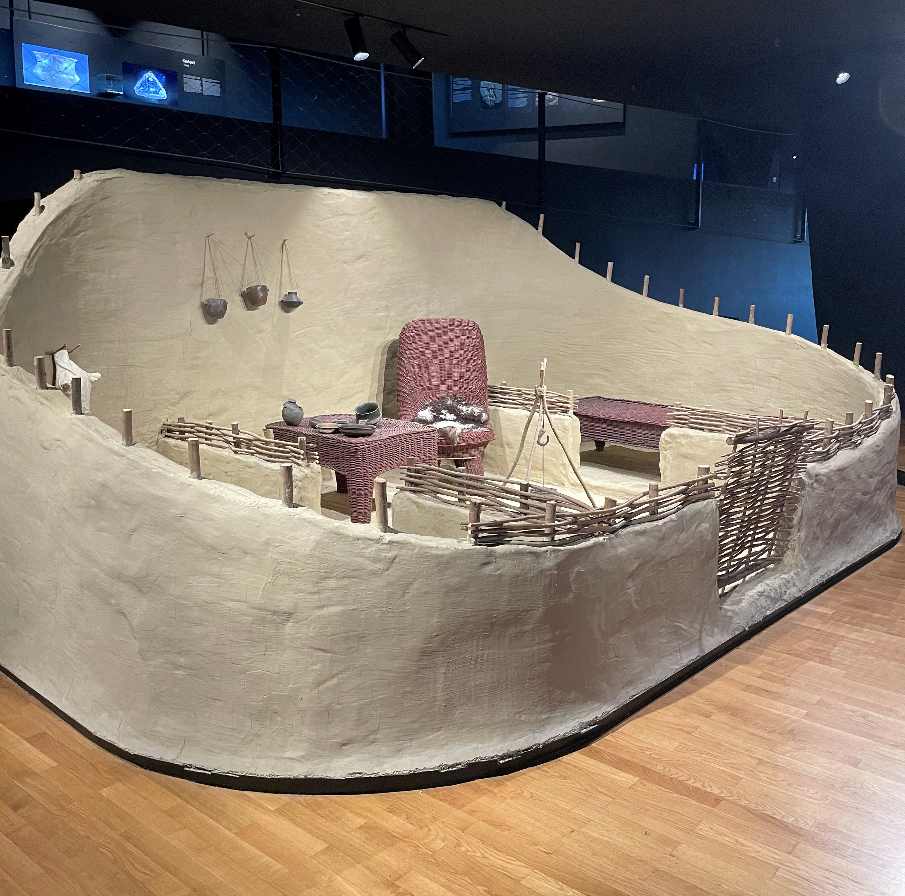

Život u vučedolskom naselju bio je pažljivo organiziran i prilagođen prirodnom okolišu. Naselja su obično bila smještena na uzvisinama uz rijeke, poput Dunava, kako bi stanovnici imali pristup vodi, ali i zaštitu od poplava. Ova strateška lokacija omogućila im je i lakšu trgovinu s drugim zajednicama koje su živjele uz rijeku. Kuće su bile građene od prirodnih materijala koji su bili dostupni u okolini. Zidovi su se izrađivali od drveta i obljepljivali smjesom gline i slame, dok su krovovi bili prekriveni trskom. Unutrašnjost kuća bila je jednostavna, ali funkcionalna – imala je ognjište u središtu, gdje se pripremala hrana i okupljala obitelj.
Vučedolci su imali razrađen sustav podjele rada. Muškarci su se bavili lovom, ribolovom i obradom metala, dok su žene izrađivale keramiku i tkale odjeću. Djeca su također sudjelovala u svakodnevnim poslovima, pomažući u čuvanju stoke ili skupljanju hrane. Osim toga, svaka je zajednica imala ljude koji su se bavili posebnim zadacima, poput izrade alata, oružja ili obrednih predmeta.
Zanimljivo je da su Vučedolci obraćali veliku pažnju na društvene odnose i obrede. Arheološki nalazi ukazuju na postojanje razrađenih pogrebnih običaja, koji su uključivali ukop preminulih u posebno izrađenim grobovima s bogatim prilozima. To pokazuje da su vjerovali u život nakon smrti i poštovali svoje pretke.